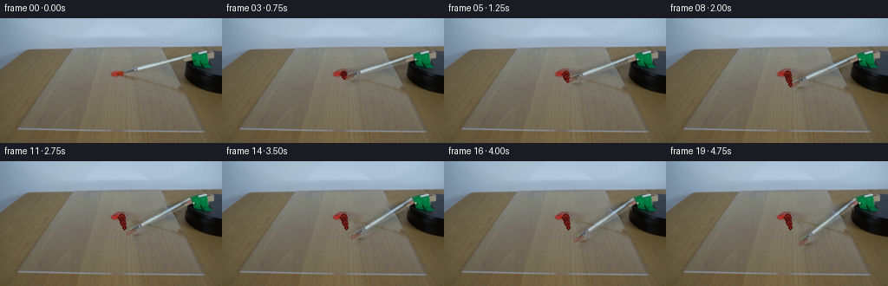
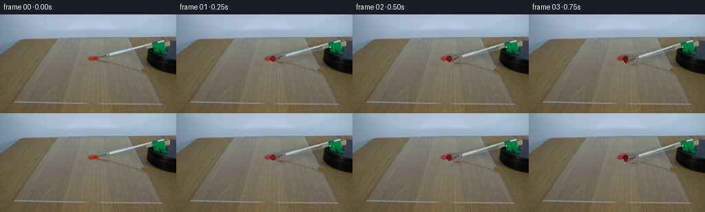

CODING AGENTS AS PIXEL WORLD MODELS
traex/GPT-5.6-Sol · 0131
点击播放 · 原生 RGB 像素
逐轮保存的候选
回放视频、检查图与代码变化。
每份候选均可单独播放。实际图片检查记录在下方工具轨迹中。
候选 01播放与检查图
点击播放 · 原生 RGB 像素


展开代码变化
--- 上一保存版本
+++ 本次保存版本
@@ -0,0 +1,178 @@
+from pathlib import Path
+import math
+import cv2
+import numpy as np
+from PIL import Image
+import artifact_io
+
+# Analytic, image-based animation of the rotary brush demonstration.
+HERE = Path(__file__).resolve().parent
+SRC = np.asarray(Image.open(HERE / "first_frame.png").convert("RGB"), dtype=np.uint8)
+H, W = SRC.shape[:2]
+
+
+def soft_mask(poly, blur=1.25):
+ m = np.zeros((H, W), np.uint8)
+ cv2.fillPoly(m, [np.asarray(poly, np.int32)], 255, lineType=cv2.LINE_AA)
+ if blur:
+ m = cv2.GaussianBlur(m, (0, 0), blur)
+ return m.astype(np.float32) / 255.0
+
+
+# The slim silver/transparent brush lies from the red-painted bristles to the
+# rotary fixture. Make a plate image without the brush; OpenCV inpainting is
+# used only inside this hand-defined narrow footprint.
+brush_poly = [(138, 55), (216, 37), (222, 40), (223, 49),
+ (216, 54), (145, 71), (138, 69)]
+core_u8 = np.zeros((H, W), np.uint8)
+cv2.fillPoly(core_u8, [np.asarray(brush_poly, np.int32)], 255)
+# Preserve the actual dollop. Only the brush immediately to its right is
+# removed; the pigment itself is part of the stationary acrylic-sheet scene.
+yy, xx = np.mgrid[:H, :W]
+paint_keep = (((xx - 135.0) / 10.8) ** 2 + ((yy - 64.0) / 7.0) ** 2) < 1.0
+inpaint_mask = core_u8.copy()
+inpaint_mask[paint_keep] = 0
+clean = cv2.inpaint(SRC, inpaint_mask, 4.0, cv2.INPAINT_TELEA).astype(np.float32)
+remove_a = soft_mask(brush_poly, 1.05)
+# Never disturb the dollop in the clean plate.
+remove_a[paint_keep] = 0.0
+base_clean = SRC.astype(np.float32) * (1.0 - remove_a[..., None]) + clean * remove_a[..., None]
+
+# Keep exactly the visual difference made by the real brush, including its
+# small natural reflection and contact shadow. Rotating a residual rather
+# than a rectangular crop avoids moving table/acrylic texture with the brush.
+source_residual = (SRC.astype(np.float32) - base_clean) * remove_a[..., None]
+source_alpha = remove_a
+PIVOT = (221.0, 47.0)
+TIP = np.array([140.0, 64.0], np.float32)
+
+
+def rotation_matrix(degrees):
+ # cv2's positive angle is counter-clockwise in Cartesian coordinates,
+ # which appears clockwise in image coordinates (y points downward).
+ return cv2.getRotationMatrix2D(PIVOT, degrees, 1.0).astype(np.float32)
+
+
+def transformed_tip(degrees):
+ # Match cv2's rotation convention exactly.
+ M = rotation_matrix(degrees)
+ return np.array([M[0, 0] * TIP[0] + M[0, 1] * TIP[1] + M[0, 2],
+ M[1, 0] * TIP[0] + M[1, 1] * TIP[1] + M[1, 2]])
+
+
+def paint_smear(frame, angle, progress):
+ """Paint left on the acrylic while the loaded tip first sweeps through."""
+ if angle <= 0.01:
+ return frame
+ out = frame.copy()
+ # Wet paint is deposited only for the first 9.5 degrees; later the brush
+ # is visibly beyond the dollop while this short curved stroke remains.
+ wet_angle = min(angle, 9.5)
+ n = max(3, int(wet_angle * 2.2) + 1)
+ pts = np.array([transformed_tip(a) for a in np.linspace(0.0, wet_angle, n)], np.int32)
+
+ # A dark viscous rim, the body of the paint, and a small specular ridge.
+ # The line tapers as the paint supply on the bristles runs out.
+ for j in range(len(pts) - 1):
+ q = j / max(1, len(pts) - 2)
+ p0, p1 = tuple(pts[j]), tuple(pts[j + 1])
+ w = max(1, int(round(5.0 - 3.8 * q)))
+ cv2.line(out, p0, p1, (83, 19, 15), w + 2, cv2.LINE_AA)
+ cv2.line(out, p0, p1, (151, 39, 29), w, cv2.LINE_AA)
+ if q < 0.72:
+ hi0 = (p0[0] - 1, p0[1])
+ hi1 = (p1[0] - 1, p1[1])
+ cv2.line(out, hi0, hi1, (190, 67, 54), 1, cv2.LINE_AA)
+
+ # At the point of contact the original rounded blob is pushed into a tiny
+ # ridge. Fade this detail in, without replacing the source-frame pigment.
+ ridge = min(1.0, angle / 4.0)
+ if ridge > 0:
+ layer = out.copy()
+ cv2.ellipse(layer, (137, 62), (6, 3), -12, 205, 355,
+ (103, 22, 18), 2, cv2.LINE_AA)
+ out = out * (1.0 - 0.36 * ridge) + layer * (0.36 * ridge)
+ return out
+
+
+def add_brush_residual(frame, degrees):
+ M = rotation_matrix(degrees)
+ res = cv2.warpAffine(source_residual, M, (W, H), flags=cv2.INTER_CUBIC,
+ borderMode=cv2.BORDER_CONSTANT, borderValue=0)
+ a = cv2.warpAffine(source_alpha, M, (W, H), flags=cv2.INTER_CUBIC,
+ borderMode=cv2.BORDER_CONSTANT, borderValue=0)
+ a = np.clip(a, 0.0, 1.0)
+
+ # Contact shadow below the raised brush gives the moving strip consistent
+ # depth over the clear sheet. It is intentionally faint on this soft-lit set.
+ shadow_a = cv2.warpAffine(source_alpha, M, (W, H), flags=cv2.INTER_LINEAR,
+ borderMode=cv2.BORDER_CONSTANT, borderValue=0)
+ shadow_a = cv2.GaussianBlur(shadow_a, (0, 0), 1.2)
+ shadow_a = np.roll(shadow_a, 2, axis=0) * 0.075
+ frame = frame * (1.0 - shadow_a[..., None])
+ frame = frame + res
+
+ # Retain a clean metallic highlight down the center of the extracted arm.
+ # Its low alpha reinforces continuity where the transparent acrylic and
+ # pale brush handle have nearly the same tone.
+ tip = transformed_tip(degrees)
+ hub = np.array(PIVOT)
+ v = tip - hub
+ length = float(np.linalg.norm(v))
+ if length > 1:
+ u = v / length
+ p0 = hub + u * 7.0
+ p1 = tip - u * 12.0
+ overlay = frame.copy()
+ cv2.line(overlay, tuple(np.rint(p0).astype(int)), tuple(np.rint(p1).astype(int)),
+ (180, 195, 197), 2, cv2.LINE_AA)
+ frame = frame * 0.82 + overlay * 0.18
+
+ # The short bristle end stays stained after crossing the red dollop.
+ tip = transformed_tip(degrees)
+ v = tip - np.array(PIVOT)
+ u = v / max(1e-6, np.linalg.norm(v))
+ b0 = tip
+ b1 = tip - u * 9.0
+ overlay = frame.copy()
+ cv2.line(overlay, tuple(np.rint(b0).astype(int)), tuple(np.rint(b1).astype(int)),
+ (111, 28, 21), 4, cv2.LINE_AA)
+ cv2.line(overlay, tuple(np.rint(b0 - np.array([0.0, 1.0])).astype(int)),
+ tuple(np.rint(b1 - np.array([0.0, 1.0])).astype(int)),
+ (171, 49, 37), 1, cv2.LINE_AA)
+ frame = frame * 0.72 + overlay * 0.28
+ return frame
+
+
+frames = []
+for i in range(20):
+ if i == 0:
+ # Contract requirement: absolutely pixel-identical source frame.
+ frames.append(SRC.copy())
+ continue
+
+ t = i / 19.0
+ # One smooth, constant-rate 24 degree clockwise sweep over five seconds.
+ # A tiny ease at both ends avoids a mechanical one-frame jerk while still
+ # reading as constant-speed during nearly all of the shot.
+ eased = t - math.sin(2.0 * math.pi * t) / (2.0 * math.pi) * 0.13
+ angle = 24.0 * eased
+
+ frame = base_clean.copy()
+ frame = paint_smear(frame, angle, t)
+ frame = add_brush_residual(frame, angle)
+
+ # The clamp/hub itself is fixed to the platform. Redraw a subtle rotating
+ # indicator highlight at its attachment point; no camera or scene motion.
+ phase = math.radians(angle)
+ cx = int(round(PIVOT[0] + 2.2 * math.cos(phase)))
+ cy = int(round(PIVOT[1] + 2.2 * math.sin(phase)))
+ cv2.circle(frame, (cx, cy), 1, (151, 166, 159), -1, cv2.LINE_AA)
+
+ frames.append(np.clip(np.rint(frame), 0, 255).astype(np.uint8))
+
+frames = np.stack(frames, axis=0)
+assert frames.shape == (20, 144, 256, 3)
+assert frames.dtype == np.uint8
+assert np.array_equal(frames[0], SRC)
+artifact_io.save(frames, HERE)
可观测工具轨迹
实际执行的命令与返回图片。
命令 1exit 0
/bin/bash -lc "ls -la && printf '\\n--- prompt.txt ---\\n' && cat prompt.txt && printf '\\n--- GENERATION_RULES.md ---\\n' && cat GENERATION_RULES.md"
命令 2exit 0
/bin/bash -lc "python3 - <<'PY'
from PIL import Image
import numpy as np
im=np.array(Image.open('first_frame.png').convert('RGB'))
print(im.shape, im.dtype)
# sample grid avg and detailed coordinates each 16 pixels
for y in range(0,144,12):
print(y, ['%02x%02x%02x'%tuple(im[y,x]) for x in range(0,256,16)])
# most quantized colors
q=(im//16)*16
u,c=np.unique(q.reshape(-1,3),axis=0,return_counts=True)
for i in np.argsort(c)[-30:][::-1]: print(tuple(u[i]),c[i])
PY"命令 3exit 0
/bin/bash -lc "python3 - <<'PY'
from PIL import Image
import numpy as np
from scipy.ndimage import label
I=np.array(Image.open('first_frame.png').convert('RGB'))
# named masks and cc
masks={
'red':(I[:,:,0]>I[:,:,1]*1.3)&(I[:,:,0]>I[:,:,2]*1.3)&(I[:,:,0]>70),
'green':(I[:,:,1]>I[:,:,0]*1.4)&(I[:,:,1]>I[:,:,2]*1.25),
'black':np.max(I,2)<45,
'dark_neutral':(np.max(I,2)<80)&((np.max(I,2)-np.min(I,2))<18),
'light_neutral':(np.min(I,2)>110)&((np.max(I,2)-np.min(I,2))<28),
'blue':(I[:,:,2]>I[:,:,0]*1.12)&(I[:,:,2]>I[:,:,1]*1.05),
}
for n,m in masks.items():
l,N=label(m)
print('\\n',n,'total',m.sum())
comps=[]
for k in range(1,N+1):
yy,xx=np.where(l==k); s=len(xx)
if s>=2: comps.append((s,xx.min(),yy.min(),xx.max(),yy.max(), round(xx.mean(),1),round(yy.mean(),1)))
print(sorted(comps,reverse=True)[:20])
# Per block stats: mean rgb in 8x8 from x 0..256, y24...
print('\\n8x8 means rows')
for y in range(24,144,8):
print('y',y, ' '.join('%02x%02x%02x'%tuple(I[y:y+8,x:x+8].mean((0,1)).astype(int)) for x in range(0,256,8)))
PY"命令 4exit 0
/bin/bash -lc "python3 - <<'PY'
from PIL import Image
import numpy as np
I=np.array(Image.open('first_frame.png').convert('RGB'))
# classify crop every 2 px
for y in range(28,96,2):
s=''
for x in range(180,256,2):
r,g,b=I[y:y+2,x:x+2].mean((0,1))
if max(r,g,b)<40: c='#'
elif max(r,g,b)<70 and max(r,g,b)-min(r,g,b)<20:c='D'
elif g>r*1.35 and g>b*1.15:c='G'
elif b>r*1.18 and b>g*1.05:c='B'
elif r>g*1.25 and r>b*1.25:c='R'
elif min(r,g,b)>125 and max(r,g,b)-min(r,g,b)<25:c='W'
elif max(r,g,b)-min(r,g,b)<18:c='n'
elif b>r*1.08:c='b'
elif r>b*1.25:c='w' # wood/brown
else:c='.'
s+=c
print(f'{y:3}',s)
print('x ',' '.join(str(x//10%10) for x in range(180,256,2)))
print('x ',' '.join(str(x%10) for x in range(180,256,2)))
PY"命令 5exit 0
/bin/bash -lc "python3 - <<'PY'
from PIL import Image
import numpy as np
I=np.array(Image.open('first_frame.png').convert('RGB'))
# report unusual / colorful segments each row around main
for name,cond in [
('black',np.max(I,2)<55),
('red',(I[:,:,0]>I[:,:,1]*1.25)&(I[:,:,0]>I[:,:,2]*1.25)&(I[:,:,0]>60)),
('green',(I[:,:,1]>I[:,:,0]*1.25)&(I[:,:,1]>I[:,:,2]*1.12)&(I[:,:,1]>50)),
('bluish',(I[:,:,2]-I[:,:,0]>35)&(I[:,:,2]-I[:,:,1]>12)),
('orange',(I[:,:,0]-I[:,:,2]>45)&(I[:,:,0]-I[:,:,1]>10)),
]:
print('\\n',name)
for y in range(25,100):
xs=np.where(cond[y])[0]
if len(xs):
# runs
runs=[]; st=pr=xs[0]
for x in xs[1:]:
if x>pr+1:runs.append((st,pr));st=x
pr=x
runs.append((st,pr))
rs=[r for r in runs if r[1]-r[0]>=1]
if rs:print(y,rs)
# summary exact samples around green region every point
print('\\ngreen center samples')
for y in range(36,61,3):
print(y,[tuple(I[y,x]) for x in range(214,251,4)])
PY"命令 6exit 0
/bin/bash -lc "python3 - <<'PY'
from PIL import Image
import numpy as np
I=np.array(Image.open('first_frame.png').convert('RGB')).astype(int)
# for each x 125..225 print RGB at y around predicted center line y=92-.22*x
for x in range(120,226,4):
yc=round(92-.22*x)
vals=[]
for y in range(yc-3,yc+4): vals.append('%02x%02x%02x'%tuple(I[y,x]))
print(x,yc,' '.join(vals))
PY"命令 7exit 0
/bin/bash -lc "sed -n '1,240p' artifact_io.py && python3 - <<'PY'
try: import cv2;print('cv2',cv2.__version__)
except Exception as e: print(e)
PY"命令 8exit 0
/bin/bash -lc "cat > generate.py <<'PY'
from pathlib import Path
import math
import cv2
import numpy as np
from PIL import Image
import artifact_io
# Analytic, image-based animation of the rotary brush demonstration.
HERE = Path(__file__).resolve().parent
SRC = np.asarray(Image.open(HERE / \"first_frame.png\").convert(\"RGB\"), dtype=np.uint8)
H, W = SRC.shape[:2]
def soft_mask(poly, blur=1.25):
m = np.zeros((H, W), np.uint8)
cv2.fillPoly(m, [np.asarray(poly, np.int32)], 255, lineType=cv2.LINE_AA)
if blur:
m = cv2.GaussianBlur(m, (0, 0), blur)
return m.astype(np.float32) / 255.0
# The slim silver/transparent brush lies from the red-painted bristles to the
# rotary fixture. Make a plate image without the brush; OpenCV inpainting is
# used only inside this hand-defined narrow footprint.
brush_poly = [(138, 55), (216, 37), (222, 40), (223, 49),
(216, 54), (145, 71), (138, 69)]
core_u8 = np.zeros((H, W), np.uint8)
cv2.fillPoly(core_u8, [np.asarray(brush_poly, np.int32)], 255)
# Preserve the actual dollop. Only the brush immediately to its right is
# removed; the pigment itself is part of the stationary acrylic-sheet scene.
yy, xx = np.mgrid[:H, :W]
paint_keep = (((xx - 135.0) / 10.8) ** 2 + ((yy - 64.0) / 7.0) ** 2) < 1.0
inpaint_mask = core_u8.copy()
inpaint_mask[paint_keep] = 0
clean = cv2.inpaint(SRC, inpaint_mask, 4.0, cv2.INPAINT_TELEA).astype(np.float32)
remove_a = soft_mask(brush_poly, 1.05)
# Never disturb the dollop in the clean plate.
remove_a[paint_keep] = 0.0
base_clean = SRC.astype(np.float32) * (1.0 - remove_a[..., None]) + clean * remove_a[..., None]
# Keep exactly the visual difference made by the real brush, including its
# small natural reflection and contact shadow. Rotating a residual rather
# than a rectangular crop avoids moving table/acrylic texture with the brush.
source_residual = (SRC.astype(np.float32) - base_clean) * remove_a[..., None]
source_alpha = remove_a
PIVOT = (221.0, 47.0)
TIP = np.array([140.0, 64.0], np.float32)
def rotation_matrix(degrees):
# cv2's positive angle is counter-clockwise in Cartesian coordinates,
# which appears clockwise in image coordinates (y points downward).
return cv2.getRotationMatrix2D(PIVOT, degrees, 1.0).astype(np.float32)
def transformed_tip(degrees):
# Match cv2's rotation convention exactly.
M = rotation_matrix(degrees)
return np.array([M[0, 0] * TIP[0] + M[0, 1] * TIP[1] + M[0, 2],
M[1, 0] * TIP[0] + M[1, 1] * TIP[1] + M[1, 2]])
def paint_smear(frame, angle, progress):
\"\"\"Paint left on the acrylic while the loaded tip first sweeps through.\"\"\"
if angle <= 0.01:
return frame
out = frame.copy()
# Wet paint is deposited only for the first 9.5 degrees; later the brush
# is visibly beyond the dollop while this short curved stroke remains.
wet_angle = min(angle, 9.5)
n = max(3, int(wet_angle * 2.2) + 1)
pts = np.array([transformed_tip(a) for a in np.linspace(0.0, wet_angle, n)], np.int32)
# A dark viscous rim, the body of the paint, and a small specular ridge.
# The line tapers as the paint supply on the bristles runs out.
for j in range(len(pts) - 1):
q = j / max(1, len(pts) - 2)
p0, p1 = tuple(pts[j]), tuple(pts[j + 1])
w = max(1, int(round(5.0 - 3.8 * q)))
cv2.line(out, p0, p1, (83, 19, 15), w + 2, cv2.LINE_AA)
cv2.line(out, p0, p1, (151, 39, 29), w, cv2.LINE_AA)
if q < 0.72:
hi0 = (p0[0] - 1, p0[1])
hi1 = (p1[0] - 1, p1[1])
cv2.line(out, hi0, hi1, (190, 67, 54), 1, cv2.LINE_AA)
# At the point of contact the original rounded blob is pushed into a tiny
# ridge. Fade this detail in, without replacing the source-frame pigment.
ridge = min(1.0, angle / 4.0)
if ridge > 0:
layer = out.copy()
cv2.ellipse(layer, (137, 62), (6, 3), -12, 205, 355,
(103, 22, 18), 2, cv2.LINE_AA)
out = out * (1.0 - 0.36 * ridge) + layer * (0.36 * ridge)
return out
def add_brush_residual(frame, degrees):
M = rotation_matrix(degrees)
res = cv2.warpAffine(source_residual, M, (W, H), flags=cv2.INTER_CUBIC,
borderMode=cv2.BORDER_CONSTANT, borderValue=0)
a = cv2.warpAffine(source_alpha, M, (W, H), flags=cv2.INTER_CUBIC,
borderMode=cv2.BORDER_CONSTANT, borderValue=0)
a = np.clip(a, 0.0, 1.0)
# Contact shadow below the raised brush gives the moving strip consistent
# depth over the clear sheet. It is intentionally faint on this soft-lit set.
shadow_a = cv2.warpAffine(source_alpha, M, (W, H), flags=cv2.INTER_LINEAR,
borderMode=cv2.BORDER_CONSTANT, borderValue=0)
shadow_a = cv2.GaussianBlur(shadow_a, (0, 0), 1.2)
shadow_a = np.roll(shadow_a, 2, axis=0) * 0.075
frame = frame * (1.0 - shadow_a[..., None])
frame = frame + res
# Retain a clean metallic highlight down the center of the extracted arm.
# Its low alpha reinforces continuity where the transparent acrylic and
# pale brush handle have nearly the same tone.
tip = transformed_tip(degrees)
hub = np.array(PIVOT)
v = tip - hub
length = float(np.linalg.norm(v))
if length > 1:
u = v / length
p0 = hub + u * 7.0
p1 = tip - u * 12.0
overlay = frame.copy()
cv2.line(overlay, tuple(np.rint(p0).astype(int)), tuple(np.rint(p1).astype(int)),
(180, 195, 197), 2, cv2.LINE_AA)
frame = frame * 0.82 + overlay * 0.18
# The short bristle end stays stained after crossing the red dollop.
tip = transformed_tip(degrees)
v = tip - np.array(PIVOT)
u = v / max(1e-6, np.linalg.norm(v))
b0 = tip
b1 = tip - u * 9.0
overlay = frame.copy()
cv2.line(overlay, tuple(np.rint(b0).astype(int)), tuple(np.rint(b1).astype(int)),
(111, 28, 21), 4, cv2.LINE_AA)
cv2.line(overlay, tuple(np.rint(b0 - np.array([0.0, 1.0])).astype(int)),
tuple(np.rint(b1 - np.array([0.0, 1.0])).astype(int)),
(171, 49, 37), 1, cv2.LINE_AA)
frame = frame * 0.72 + overlay * 0.28
return frame
frames = []
for i in range(20):
if i == 0:
# Contract requirement: absolutely pixel-identical source frame.
frames.append(SRC.copy())
continue
t = i / 19.0
# One smooth, constant-rate 24 degree clockwise sweep over five seconds.
# A tiny ease at both ends avoids a mechanical one-frame jerk while still
# reading as constant-speed during nearly all of the shot.
eased = t - math.sin(2.0 * math.pi * t) / (2.0 * math.pi) * 0.13
angle = 24.0 * eased
frame = base_clean.copy()
frame = paint_smear(frame, angle, t)
frame = add_brush_residual(frame, angle)
# The clamp/hub itself is fixed to the platform. Redraw a subtle rotating
# indicator highlight at its attachment point; no camera or scene motion.
phase = math.radians(angle)
cx = int(round(PIVOT[0] + 2.2 * math.cos(phase)))
cy = int(round(PIVOT[1] + 2.2 * math.sin(phase)))
cv2.circle(frame, (cx, cy), 1, (151, 166, 159), -1, cv2.LINE_AA)
frames.append(np.clip(np.rint(frame), 0, 255).astype(np.uint8))
frames = np.stack(frames, axis=0)
assert frames.shape == (20, 144, 256, 3)
assert frames.dtype == np.uint8
assert np.array_equal(frames[0], SRC)
artifact_io.save(frames, HERE)
PY
python3 generate.py
python3 - <<'PY'
import numpy as np
from PIL import Image
f=np.stack([np.asarray(Image.open(f'frames/{i:02d}.png')) for i in range(20)])
print(f.shape,f.dtype,'f0 exact',np.array_equal(f[0],np.asarray(Image.open('first_frame.png').convert('RGB'))))
for i in range(20):
d=np.abs(f[i].astype(int)-f[0].astype(int)); ch=np.any(d>4,2)
ys,xs=np.where(ch)
print(i, int(ch.sum()), (int(xs.min()),int(ys.min()),int(xs.max()),int(ys.max())) if len(xs) else None, round(float(d.mean()),3))
PY"命令 9exit 0
/bin/bash -lc "python3 - <<'PY'
import numpy as np, cv2
from PIL import Image
S=np.array(Image.open('first_frame.png')).astype(float); F=np.array(Image.open('frames/19.png')).astype(float)
# sample cross-sections old/new line. expected endpoint angle24, pivot221,47 endpoint153,95. shaft line to hub
for x in range(155,222,8):
y=round(95+(47-95)*(x-153)/(221-153))
print('new',x,y,'pix',F[y,x].astype(int),'cross',[round(np.linalg.norm(F[y+q,x]-F[y,x]),1) for q in [-5,-3,3,5]],'delta',round(np.linalg.norm(F[y,x]-S[y,x]),1))
print('old')
for x in range(145,217,8):
y=round(64+(47-64)*(x-140)/(221-140))
print(x,y,S[y,x].astype(int),F[y,x].astype(int),round(np.linalg.norm(F[y,x]-S[y,x]),1))
PY"保存候选 1 份；完成命令 9 次；可验证图片返回 0 张。原始 API 响应与完整日志保留在本地。